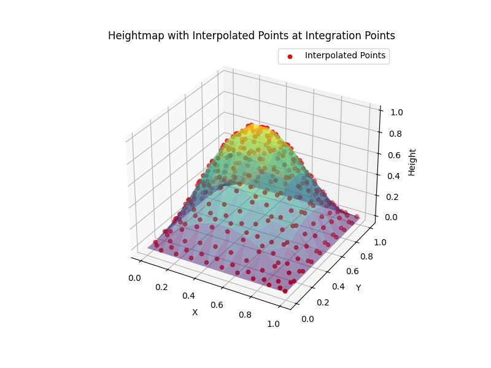
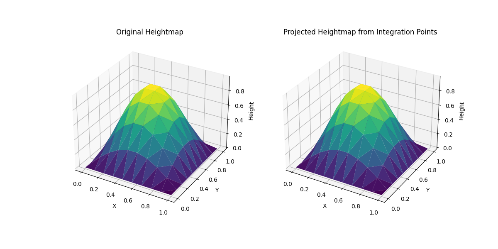

Note
Go to the end to download the full example code.
Heightmap interpolation and projection at integration points#
This example demonstrates how to use the pysdic.compute_property_interpolation() (or pysdic.assemble_property_interpolation())
and pysdic.compute_property_projection() (or pysdic.assemble_property_projection()) functions
from the pysdic library to interpolate and project properties at integration points
within a mesh.
Define a heightmap and a simple 2D mesh with triangle 3 elements#
Create a heightmap using a sine function over a 2D grid. Then define some integration points into the elements
import numpy
import matplotlib.pyplot as plt
from pysdic import create_triangle_3_heightmap
mesh = create_triangle_3_heightmap(
height_function=lambda x, y: numpy.sin(numpy.pi * x) * numpy.sin(numpy.pi * y),
x_bounds=(0.0, 1.0),
y_bounds=(0.0, 1.0),
n_x=10,
n_y=10
)
vertices_coordinates = mesh.vertices.points # (N_v, 3)
height = vertices_coordinates[:, 2] # (N_v,)
elements = mesh.elements # (N_e, N_npe)
natural_coordinates = numpy.repeat([[0.25, 0.25], [0.8, 0.1]], repeats=elements.shape[0], axis=0) # (N_p=2*N_e, K=2)
element_indices = numpy.tile(numpy.arange(elements.shape[0]), reps=2) # (N_p=2*N_e,)
print(f"Number of vertices: {vertices_coordinates.shape[0]}")
print(f"Number of elements: {elements.shape[0]}")
print(f"Number of integration points: {natural_coordinates.shape[0]}")
Number of vertices: 100
Number of elements: 162
Number of integration points: 324
Interpolate height values and x-y position at integration points#
Use the compute_property_interpolation function to interpolate the height values
at the defined integration points.
using matplotlib to visualize the results by plotting the height values at the integration points.
Note that using assemble_property_interpolation function is also possible to avoid recomputing
the shape functions values at each call (See the documentation for more details).
from pysdic import compute_property_interpolation
points_locations = compute_property_interpolation(
property_array=vertices_coordinates[:, :2], # x-y positions
connectivity=elements,
element_type='triangle_3',
natural_coordinates=natural_coordinates,
element_indices=element_indices
) # (N_p, 2)
points_heights = compute_property_interpolation(
property_array=height,
connectivity=elements,
element_type='triangle_3',
natural_coordinates=natural_coordinates,
element_indices=element_indices
) # (N_p,)
print(f"Interpolated points locations shape = {points_locations.shape}")
print(f"Interpolated points heights shape = {points_heights.shape}")
# Now display the mesh and the interpolated points
fig = plt.figure(figsize=(8, 6))
ax = fig.add_subplot(111, projection='3d')
ax.plot_trisurf(
vertices_coordinates[:, 0],
vertices_coordinates[:, 1],
height,
triangles=elements,
cmap='viridis',
alpha=0.5,
edgecolor='none'
)
ax.scatter(
points_locations[:, 0],
points_locations[:, 1],
points_heights.flatten(),
color='red',
s=20,
label='Interpolated Points'
)
ax.set_title('Heightmap with Interpolated Points at Integration Points')
ax.set_xlabel('X')
ax.set_ylabel('Y')
ax.set_zlabel('Height')
ax.legend()
plt.show()

Interpolated points locations shape = (324, 2)
Interpolated points heights shape = (324, 1)
Project height values from integration points back to vertices#
Use the compute_property_projection function to project the height values
from the integration points back to the mesh vertices.
Note that using assemble_property_projection function is also possible to avoid recomputing
the shape functions values at each call (See the documentation for more details).
from pysdic import compute_property_projection
projected_height = compute_property_projection(
property_array=points_heights,
connectivity=elements,
element_type='triangle_3',
natural_coordinates=natural_coordinates,
element_indices=element_indices,
n_vertices=vertices_coordinates.shape[0]
) # (N_v,)
print(f"Projected height shape = {projected_height.shape}")
# Now display the original and projected heightmaps
fig = plt.figure(figsize=(12, 6))
ax1 = fig.add_subplot(121, projection='3d')
ax1.plot_trisurf(
vertices_coordinates[:, 0],
vertices_coordinates[:, 1],
height,
triangles=elements,
cmap='viridis',
edgecolor='none'
)
ax1.set_title('Original Heightmap')
ax1.set_xlabel('X')
ax1.set_ylabel('Y')
ax1.set_zlabel('Height')
ax2 = fig.add_subplot(122, projection='3d')
ax2.plot_trisurf(
vertices_coordinates[:, 0],
vertices_coordinates[:, 1],
projected_height.flatten(),
triangles=elements,
cmap='viridis',
edgecolor='none'
)
ax2.set_title('Projected Heightmap from Integration Points')
ax2.set_xlabel('X')
ax2.set_ylabel('Y')
ax2.set_zlabel('Height')
plt.show()
# Print the difference between original and projected heightmaps
height_difference = numpy.abs(height - projected_height.flatten())
print(f"Max height difference after projection: {numpy.max(height_difference)}")

Projected height shape = (100, 1)
Max height difference after projection: 6.661338147750939e-16
Total running time of the script: (0 minutes 0.191 seconds)